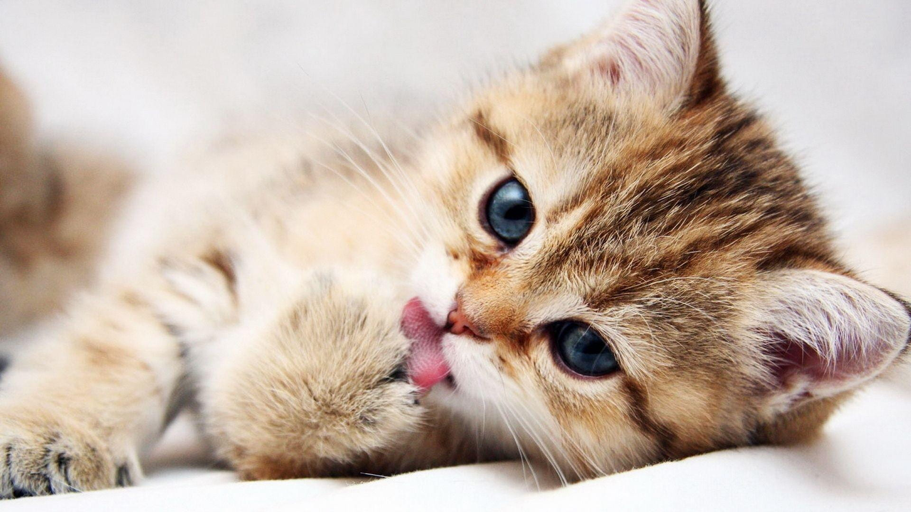
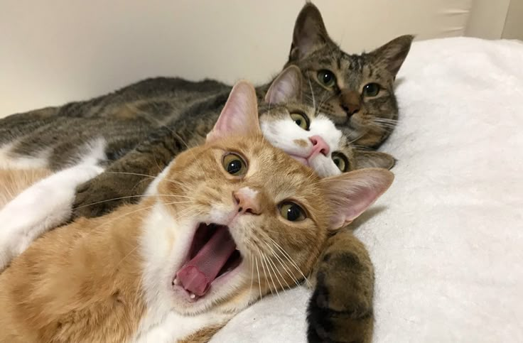

Tentang Kami

Paw-sitive Vibes Only adalah komunitas untuk para pecinta kucing dari seluruh penjuru Indonesia. Kami berdedikasi untuk
menyebarkan kebaikan melalui cerita, edukasi, dan cinta terhadap hewan berbulu yang menggemaskan ini. Komunitas ini
terbuka bagi siapa saja yang ingin belajar, berbagi pengalaman, atau sekadar menikmati tingkah lucu kucing peliharaan.
Jenis Kucing

Dari Persia yang anggun hingga Scottish Fold yang menggemaskan, setiap jenis kucing memiliki karakter dan keunikan
tersendiri. Kami menyediakan informasi lengkap tentang berbagai ras kucing, baik lokal maupun internasional, termasuk
perawatan, kebiasaan, dan hal-hal yang perlu diperhatikan oleh pemilik baru.
Perawatan
Merawat kucing tidak hanya soal makanan dan tempat tinggal. Di komunitas kami, kamu bisa menemukan tips tentang menjaga
kesehatan kucing, grooming, vaksinasi, serta cara mengenali tanda-tanda kucing sedang sakit. Kami percaya bahwa kucing
yang bahagia adalah kunci dari pemilik yang bahagia juga.
Kisah Lucu
Setiap anggota komunitas kami pasti punya cerita lucu tentang kucing mereka. Dari kucing yang menyelinap ke dalam kulkas
sampai yang pura-pura tidur saat disuruh mandi, di sinilah tempat berbagi kisah yang menghibur sekaligus menghangatkan
hati. Tertawalah bersama kami melalui cerita-cerita ini!